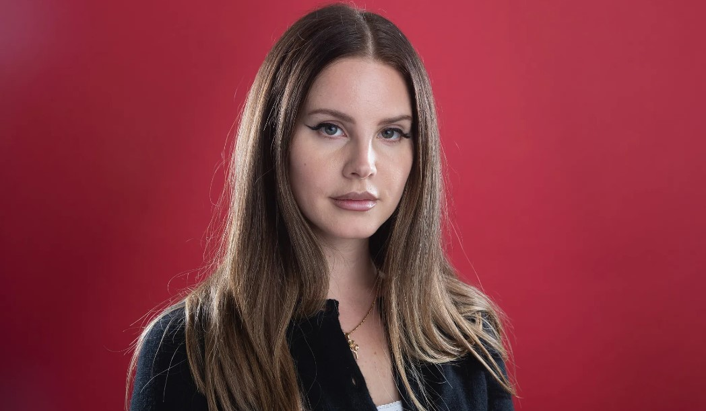
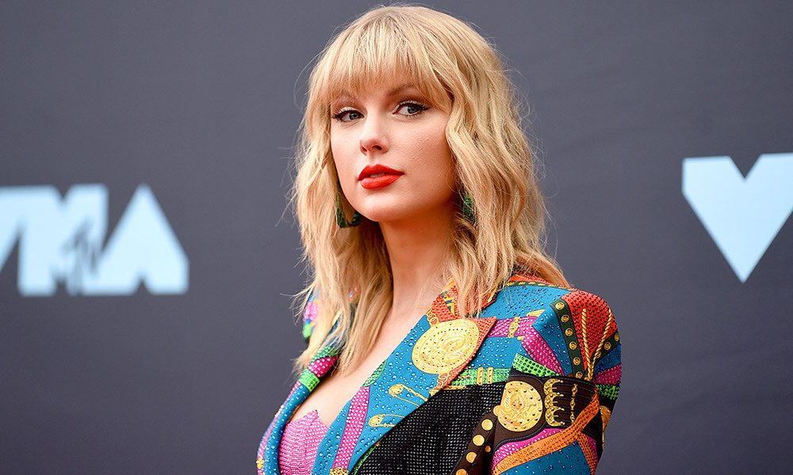
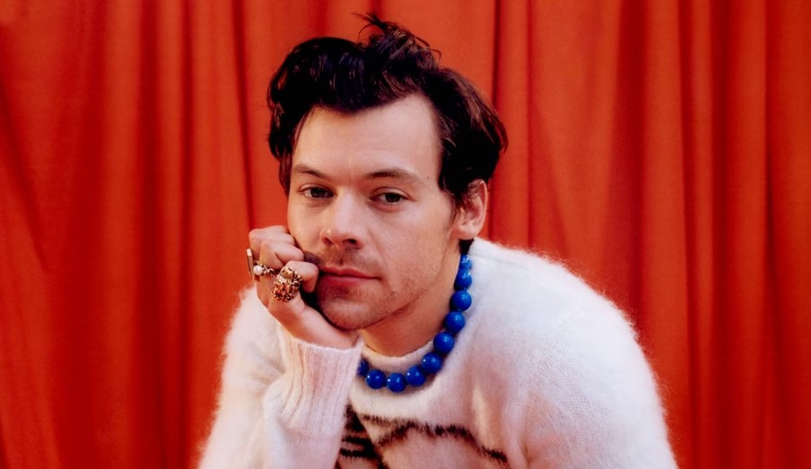

My Favorite Musical Artists
1. Lana Del Rey

More About Lana
Favorite Songs:
- Venice B****
- West Coast
- Terrence Loves You
2. Taylor Swift

More About Taylor
Favorite Songs:
- Enchanted
- The Great War
- Wildest Dreams
3. Harry Styles

More About Harry
Favorite Songs:
- Fine Line
- Cherry
- Keep Driving